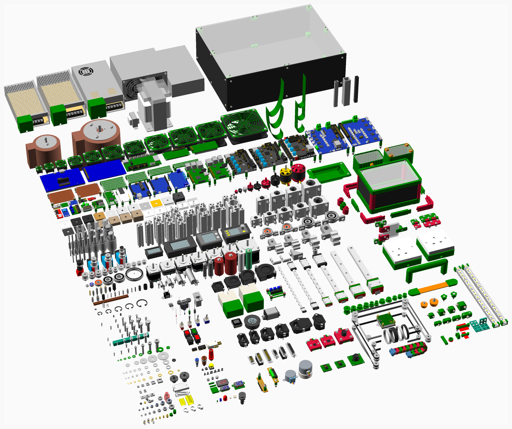

software revision 7453

Replimat is developed using the git version control system, on the github hosting service, in the replimat git repository as well as in the repositories of the upstream software projects themselves.
Follow these instructions to install and use the software portions of the Replimat project and the tools to modify them. Much of this software is intended to work with the replimat controller.
Setting up prerequisites
Linux
Fedora
Open a terminal and type the following:
sudo dnf install git openscad rust cargo rabbitvcs-nautilus rabbitvcs-gedit rabbitvcs-cli kicad arduino keepassxc yosys gimp inkscape vim
Some distributions, such as 64 bit Fedora, put 64 bit libraries in the /usr/lib64 directory, whereas nautilus-python (the program that lets us extend nautilus) assumes all libraries are in the /usr/lib directory. This is a nautilus-python bug. The current workaround is to create a symlink:
ln -s /usr/lib64/libpython2.6.so /usr/lib/libpython2.6.so
NopSCADlib requires some setup:
sudo sh -c 'echo "export OPENSCADPATH=$HOME/Documents/GitHub/replimat/lib/openscad" >>/etc/profile'
Meikian Live
Meikian Live (formely named CWLive) is a GNU/Linux live distribution initially focused on Clone Wars community, but intended to all the RepRap users and developers. Based on Debian GNU/Linux, it includes most of the Software, Firmware, useful links and other related stuff you can use on a day to day as a reprapper.
Pop! OS
sudo apt install meld git openscad rustc cargo rabbitvcs-nautilus rabbitvcs-gedit rabbitvcs-cli kicad arduino gnome-tweak-tool obs-studio obs-plugins fritzing subversion keepassxc yosys openscad freecad gimp inkscape cura exfat-fuse python3-markdown codespell peek autokey filelight yagv vim vokoscreen-ng libserialport0 patchelf solvespace
To get the latest IceStudio, download the appimage from icestudio.io
NopSCADlib requires some setup:
sudo sh -c 'echo "export OPENSCADPATH=$HOME/Documents/GitHub/replimat/lib/openscad" >>/etc/profile'
Add the following to /etc/profile as well
if [ -d "$HOME/Documents/GitHub/replimat/lib/openscad/NopSCADlib/scripts/" ] ; then
PATH="$PATH:$HOME/Documents/GitHub/replimat/lib/openscad/NopSCADlib/scripts/"
fi
Arduino doesn't run out of the box on recent Ubuntu releases. We need to patch a library to allow it to work:
sudo patchelf --add-needed /usr/lib/x86_64-linux-gnu/libserialport.so.0 /usr/lib/x86_64-linux-gnu/liblistSerialsj.so.1.4.0
Download and unpack U8glib-HAL arduino library into ~/Arduino/libraries/
Download Marlin firmware and unpack into ~/Documents/GitHub/Marlin/
Ubuntu
sudo apt install meld git openscad rustc cargo rabbitvcs-nautilus rabbitvcs-gedit rabbitvcs-cli kicad arduino gnome-tweak-tool obs-studio obs-plugins fritzing subversion keepassxc yosys openscad freecad gimp inkscape cura exfat-fuse python3-markdown codespell ubuntu-gnome-default-settings vanilla-gnome-default-settings vanilla-gnome-desktop ubuntu-gnome-desktop peek filelight yagv vim vokoscreen-ng libserialport0 patchelf solvespace
NopSCADlib requires some setup:
sudo sh -c 'echo "export OPENSCADPATH=$HOME/Documents/GitHub/replimat/lib/openscad" >>/etc/profile'
Ubuntu 20.10 requires a symlink in /usr/bin for the ImageMagick command line utility:
sudo ln -s /usr/bin/convert /usr/bin/magick
Arduino doesn't run out of the box on recent Ubuntu releases. We need to patch a library to allow it to work:
sudo patchelf --add-needed /usr/lib/x86_64-linux-gnu/libserialport.so.0 /usr/lib/x86_64-linux-gnu/liblistSerialsj.so.1.4.0
Download and unpack U8glib-HAL arduino library into ~/Arduino/libraries/
Download Marlin firmware and unpack into ~/Documents/GitHub/Marlin/
Redox
Redox OS is an operating system written in the Rust programming language, and a high-value build target for Replimat. Expanding the instructions here, for installing the software necessary for building and modifying Replimat to work on Redox OS would be an excellent way to contribute to the project.
Windows
<youtube>PdKMiFKGQuc</youtube>
- chocolatey doesn't seem to have openscad, arduino, possibly others
- Just-install does not seem to have openscad
- Windows Remix seems to have openscad
** openscad, github desktop, freecad, inkscape, gimp, arduino, cura,
CAD
Cloning the git repository
- If you haven't already, install git.
- Join Github
- Using the command line client:
** git --config global user.name "User Name"
** git --config global user.email "user@email.com"
** mkdir ~/Documents/GitHub/replimat
** cd ~/Documents/GitHub/replimat
** git clone https://github.com/timschmidt/replimat.git
- Using the Github Desktop:
Blender
Using blender from Python requires the 'bpy' module which does not install correctly on Ubuntu out of the box. Installation details here.
OpenSCAD
Replimat parts are modeled with important features oriented toward the X axis origin, and centered on the grid location closest to the origin or with a mounting hole centered at that location.
A set of CAD functions are available as part of the NopSCADlib library for the free and open source OpenSCAD constructive solid geometry software. It contains functions for tubular and T slot frames of configurable size and orientation, flat surfaces with and without notched corners, many additional parts, and easy hole-aligned translation:
// grid_frame_z(segments, material, width) - create a vertical frame 'segments' long
// grid_frame_x(segments, material, width) - create a horizontal frame along the X axis
// grid_frame_y(segments, material, width) - create a horizontal frame along the Y axis
// grid_nut()
// grid_bolt_z(length, width)
// grid_bolt_x(length, width)
// grid_bolt_y(length, width)
// grid_bolt_nut_z(length, width)
// grid_plate_dxf(wide, deep, hole_radius, corner_radius, width) - create a plate width and depth in 'segments'
// grid_plate_stl(wide, deep, hole_radius, corner_radius, width)
// grid_pillow_block()
// grid_translate([x, y, z]) - translate frames or plates in X, Y, or Z axes in units 'segments'
There's also an M-Bitbeam OpenSCAD library and another Gridbeam and Bitbeam OpenSCAD and OpenJSCAD library.
Additional information can be found in the OpenSCAD User Manual
- Inkscape to OpenSCAD converter
- OpenSCAD Runner - A Python library to interface with and run the OpenSCAD interpreter
- OpenSCAD Documentation Generator - This package generates wiki-ready GitHub flavored markdown documentation pages from in-line source code comments. This is similar to Doxygen or JavaDoc, but designed for use with OpenSCAD code. Example images can be generated automatically from short example scripts
- Parts and projects in the Replimat github repository are implemented using NopSCADlib
- Github: Hob3l - Replace 3D CSG by Fast 2D Polygon Clipping for slicing for 3d printing
- Unionround() for fast fillets and chamfers
FreeCAD
A FreeCAD Replimat library is currently under development. BOLTS and FreeCAD Library serve as useful starting points.
Inkscape
DXF2Papercraft
CADQuery
Code CAD based on the Python programming language and PythonOCC Docs
- CADQuery
- CADQuery Editor
- CADQuery Parts library analagous to nopSCADlib
- Jupyter Notebooks for CADQuery
LoVR
"LÖVR uses a 3D coordinate system with values specified in meters. Negative z values are in front of the camera, positive y values are above the ground, and negative x values are to the left. By default, the coordinate system maps to the VR play area, so the origin is on the ground in the middle of the play space." LOVR docs
- HTML5 Genetic Algorithm 2D Car Thingy
- Lua manual
- Libraries
- Oculus support
- csg.js as an example of from-scratch CSG with polygons
- lovr calling native code through FFI on the Quest
- Rovr Rust reimplementation of the Lovr API - lovr.filesystem only ATM
- lovr-letters
- Alloverse
- hot-loader for lovr
- generative geometry lovr scenes
- lovr point and drag sample
- Termux wiki: Internal and external storage
- Alloverse assets
- Alloverse shapes
- This repository is collection of Lua libraries for creating meshes from scratch and for constructing more complex objects from primitives.
- Lovr grid
- Lovr entity object engine
- Lovr controller controller
- 2 Bone inverse kinematics
- Lovr hand tracking skinning
termux-setup-storage
ln -s /storage/emulated/0/Android/data/org.lovr.hotswap/files/.lodr/ lovr
Centering objects in Blender involves Shift-S 1, Shift-S 7
Misc
3D Scanning
CAM
- F-Engrave
- https://github.com/grotius-cnc/QT_CadCam_rev0
- http://jscut.org/
- https://github.com/cncjs/cncjs
- https://camotics.org/
- https://wiki.freecadweb.org/Path_Workbench
- KrabzCAM
- Shapeoko Wiki: CAM
- Github: Mandoline
- Kiri:Moto web slicer
Images
Nesting
- https://svgnest.com/
- https://deepnest.io/
Electronics
Packaging
Ubuntu
Windows
References
- Automatic 5-axis NC toolpath generation
- How to Run a Live Coding Stream on Twitch using OBS
- Knuthcam
- PID without a PhD
- The Rust Programming Language
- Patterns Of Software
- Useful software packages
- https://wiki.shapeoko.com/index.php/CAM
- RepRap Options
- How to convert from cartesian to polar coordinates
- An Exact Algorithm for Finding Minimum Oriented Bounding Boxes
- OpenVDB
- Parametric CAD modeling for open source scientific hardware: Comparing OpenSCAD and FreeCAD Python scripts
- Brickit App
- Wikipedia: CORDIC
- Image2Lego: Customized LEGO® Set Generation from Images
{kind=link}
<youtube>684KSAvYbw4</youtube>